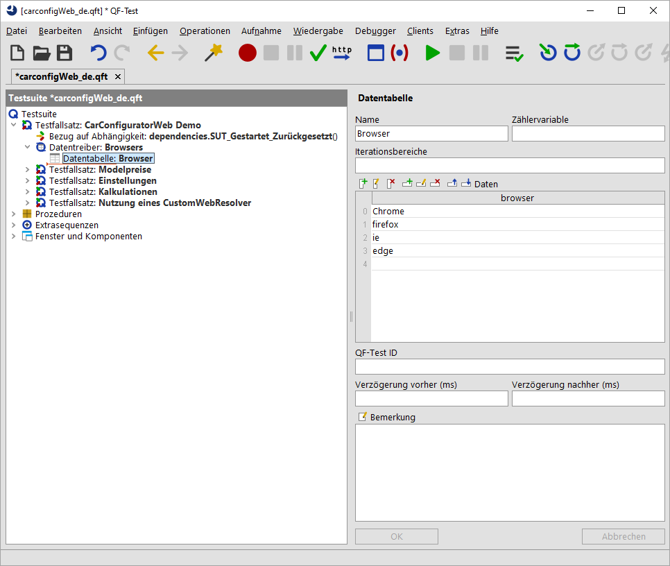

| Version 6.0.3 |
QF-Test erlaubt das intuitive Testen von Webseiten im Browser aus Sicht des Benutzers. Wie auch bei den anderen unterstützten GUI-Technologien können Aktionen und Checks direkt aufgenommen, nachbearbeitet, strukturiert und wiedergegeben werden.
QF-Test unterstützt die Automatisierung von Tests die folgenden Browser:
Details zu den unterstützten Browser Versionen finden Sie in Abschnitt 1.1.2.
Eine Schritt-für-Schritt Anleitung zum Einstieg das Web-Testen mit QF-Test finden Sie im entsprechende zweiten Teil des Tutorials.
 Es gibt Teile des Tutorials auch als Videos. Nur zur
Erzeugung einer passenden Web-Startsequenz empfehlen wir das Video Der Schnellstart Assistent
Web auf unserem QF-Test YouTube Kanal.
Es gibt Teile des Tutorials auch als Videos. Nur zur
Erzeugung einer passenden Web-Startsequenz empfehlen wir das Video Der Schnellstart Assistent
Web auf unserem QF-Test YouTube Kanal.
Die Vorgehensweise für die Testerstellung und -ausführung bei Web-Anwendungen unterscheidet sich nicht wesentlich von der anderer GUI-Technologien, wie dies allgemein ab Kapitel 2 dieses Handbuchs beschrieben wird. Jedoch sollte ein besonderer Augenmerk auf die Komponentenerkennung gelegt werden, die stark abhängig von der konkreten Implementierung der Web-Anwendung ist. Um herauszufinden, wie gut die direkte Wiedererkennung funktioniert, empfiehlt es sich zu Beginn testweise Aktionen auf unterschiedliche Komponenten und Masken der Web-Anwendung aufzunehmen und das korrekte Abspielen zu überprüfen. Weitere Hinweise zur Komponentenerkennung und Möglichkeiten der Optimierung finden Sie in Abschnitt 13.4.
Im ersten Schritt muss der gewünschte Browser von QF-Test gestartet und eine Verbindung hergestellt werden. Sobald die per URL angegebene Web-Anwendung geladen ist, kann mit der Aufnahme und Testerstellung begonnen werden.
QF-Test verwendet unterschiedliche Methoden, so genannte Driver, um Zugriff auf den Browser zu erlangen und eine Verbindung herzustellen: den QF-Driver, den CDP-Driver und den WebDriver.
HinweisJe nach Browser stehen unterschiedliche Verbindungsmodi zur Verfügung. QF-Test versucht, automatisch den besten Modus zu wählen. Sie können die Kontrolle darüber mit Hilfe des Attributs 'Verbindungsmodus für den Browser' im 'Web-Engine starten' Knoten übernehmen. Details hierzu finden Sie in Abschnitt 47.3.
Beim QF-Driver wird der auf dem Rechner des Anwenders installierte Browser in ein so genanntes Wrapper-Fenster eingebunden. Man spricht bei diesem Ansatz auch von Embedding. QF-Test bindet in dieses Fenster den lokal installierten Web-Browser nativ ein und erlangt somit Zugriff auf die Automatisierungs-Interfaces des jeweiligen Browsers. Über diese kann QF-Test dann die benötigten Events vom Browser abgreifen aber auch umgekehrt Events in den Browser einspeisen.
Die Einbettung des Browsers in ein separates Fenster funktioniert für neuere Browser leider nicht mehr zufriedenstellend oder gar nicht, weshalb alternative Mechanismen zur Verfügung stehen.
5.3+ Der CDP-Driver Mechanismus greift zur Kommunikation auf die in Chromium (und davon abgeleiteten Browsern) eingebaute Debugging-Schnittstelle zurück. Dazu verwendet QF-Test das Chrome DevTools Protokoll. Da dies die gleiche Schnittstelle ist, welche auch von den Entwicklungstools im Browser verwendet wird, ist eine enge und effiziente Testausführung möglich. Leider steht das Protokoll noch nicht für alle von QF-Test unterstützen Browser zur Verfügung.
4.1+ Der WebDriver Mechanismus verwendet als Bindeglied zwischen dem Browser und QF-Test den Selenium WebDriver, der sich zu einem W3C-Standard für die Steuerung von Web-Browsern entwickelt hat (http://www.w3.org/TR/webdriver/).
Hinweis Der WebDriver Modus ist systembedingt leider in Bezug auf Performance und Funktionsumfang im Vergleich zum QF-Driver etwas eingeschränkt (siehe Abschnitt 47.3.4). Wenn möglich sollte die Testerstellung mittels QF-Driver oder CDP-Driver, also z.B. mit dem Chrome Browser durchgeführt werden. Die reine Ausführung kann dann auch mittels WebDriver erfolgen - leider nicht ganz so performant.
Hinweis Um die Aufnahmefunktionalitäten von QF-Test auch im WebDriver Modus verwenden zu können, muss QF-Test die Inhalte des Browser-Fensters kontinuierlich analysieren und auf Änderungen überwachen. Dies kann in einigen Browsern eine Warnung hervorrufen, die sich auf Mixed-Mode-Darstellung bzw. die Verwendung eines unbekannten Zertifikats bezieht. Sollte diese Warnung bzw. Fehlermeldung nur während des Tests Ihrer Website mit QF-Test auftreten, so kann sie ignoriert werden.
Bei Web-Applikationen haben Entwickler viele Freiheitsgrade, wie sie graphische Objekte in HTML entwickeln. Dies resultiert in einer Vielzahl von Implementierungen für funktionale GUI-Komponenten wie Buttons, Textfelder, Tabellen etc. Hier ein paar Beispiele für die Umsetzung eines Okay Buttons:
<button id="ok1">OK</button>
<div class="toolkit-btn">OK</div>
<span class="btn" name="ok2">OK</span>
<div role="button">OK</div>
Zunächst nimmt QF-Test die GUI-Elemente mit den HTML-Tags als Klassen sowie die Basiswiedererkennungsmerkmale auf.
Im ersten Beispiel würde somit eine
QF-Test Komponente mit der Klasse BUTTON, dem Namen ok1
und den für die Anzeige gültigen Struktur- und Geometrieinformationen angelegt.
Beim Abspielen der Tests sollte die Komponente somit zuverlässig erkannt werden.
Darüber hinaus prüft QF-Test, ob es sich bei den HTML-Angaben um Quasi-Standards handelt,
die einer generischen QF-Test Klasse zugeordnet werden können. Dies wäre in diesem
Beispiel der Fall und es würde Button zugewiesen.
Der Vorteil der generischen Klassen ist, dass klassenabhängig zusätzliche Wiedererkennungsmerkmale aufgenommen werden. So wird einem Button zum Beispiel die Beschriftung als 'Merkmal' Attribut zugewiesen. Des weiteren stehen bei der Aufnahme von Checks zusätzliche klassenspezifische Checks zur Verfügung. Bei Tabellen wird zum Beispiel die Aufnahme eines Checks für eine ganze Zeile oder Spalte angeboten. Weitere Vorteile sind in der Einleitung zu Generische Klassen beschrieben. Detaillierte Informationen zu den klassenspezifischen Erweiterungen finden Sie in Eigenschaften von generischen Klassen.
Auf dem Markt existieren eine Vielzahl von Web Toolkits, wie Angular, React oder Vue.js, die die Erstellung von Webseiten massiv erleichtern. Jedes dieser Toolkits hat seine eigenen Implementierungen für GUI-Objekte.
Im zweiten Beispiel verwendet das Toolkit immer die css-Klasse toolkit-btn
für Buttons.
Für eine Reihe von Toolkits ist in QF-Test die Zuordnung der GUI-Elemente zu Komponenten einer bestimmten generischen Klassen bereits hinterlegt. In diesen Fällen können Sie mit der gewohnt stabilen Komponentenerkennung von QF-Test arbeiten. Weitere Informationen zu den unterstützten Web Toolkits finden Sie in Besondere Unterstützung für verschiedene Webframeworks. Im Normalfall erkennt QF-Test selbständig, ob und mit welchem Toolkit die Web-Anwendung erstellt wurde. Alternativ können Sie manuell aus den verfügbaren Web Toolkits auswählen.
Das dritte und vierte Beispiel entsprechen keinerlei Standards. Die Wiedererkennung
im dritten Beispiel würde über das name Attribut vermutlich ausreichend
stabil sein. Im vierten Beispiel bietet das GUI-Objekt von sich aus aber gar keine guten Merkmale
für die Wiedererkennung. In beiden Fällen kann jedoch das kennzeichnende HTML-Attribut
der generischen Klasse Button zugewiesen werden. Details hierzu finden Sie in
Verbesserte Komponentenerkennung mittels CustomWebResolver.
Hinweis Es ist sinnvoll vor dem Erstellen der Tests zu prüfen, zu welcher dieser Kategorien die GUI-Objekte der zu testenden Applikation gehören. Falls die Standarderkennung nicht ausreichend ist, sollte durch Zuordnung von GUI-Objekten zu generischen QF-Test Klassen eine Optimierung erfolgen. Siehe Abschnitt 47.1.
Allgemeine Informationen Komponenten in QF-Test finden Sie in Kapitel 5.
Hinweis Der Umgang mit mehreren Browser-Fenstern wird in FAQ 25 genauer erläutert.
Browser-übergreifende Tests sind einfach realisierbar. Sie erstellen Testfälle für einen
Browser und können diese dann auf anderen Browsern abspielen. Im Wesentlichen muss nur in
einem Datentreiber die Variable $(browser), die den Browser definiert,
passend gesetzt werden. Falls Sie es probieren wollen, fügen Sie einfach in der mitgelieferten
Demo-Testsuite für Web im Testfallsatz "CarConfiguratorWeb Demo" einen 'Datentreiber' wie folgt ein:
(Um die Demo-Testsuite zu öffnen, wählen Sie den Menüpunkt »Hilfe«-»Beispiel-Testsuiten erkunden...« und klicken den
"öffnen"-Link hinter "Web CarConfig Suite".)
|
|  | ||
|
| Abbildung 13.1: Cross-Browser Tests | ||
Dann werden die vier Testfallsätze, die gemeinsam mit dem Datentreiber im Testfallsatz "CarConfiguratorWeb Demo" liegen, für jeden Browser-Typ einmal durchlaufen.
4.2.1+ Beim Testen von Webseiten ist häufig das Benutzererleben auf mobilen Geräten wie Smartphones oder Tablets relevant, da die Webseite aufgrund einer unterschiedlichen Browser-Kennung ("User Agent") und spezifischen Display-Größen anders dargestellt wird als im Desktop-Browser ("Responsive Design").
QF-Test unterstützt solche Szenarien über die Emulation mobiler Browser. Dabei wird ein Desktop-Browser in einem Modus gestartet, in welchem die Fenstergrößen und die Browserkennung den Browser eines Mobilgerätes emuliert.
Insbesondere Google Chrome ist in der Lage, spezifische Charakteristika der mobilen Variante, wie ein angepasstes Pixel-Verhältnis bzw. eine automatische Skalierung nicht-responsiver Webseiten nachzubilden.
Um mit so einem Szenario zu beginnen, können Sie im Schnellstart-Assistenten die Kategorie "Eine Web-Anwendung in einem emulierten mobilen Browser" nutzen und dann das gewünschte Mobilgerät auswählen (siehe Kapitel 3).
Ein Demo finden Sie in der Testsuite "carconfigWeb_advanced_de.qft". Dort die Testsuite "Emulation von mobilen Geräten". Dies können einfach öffnen über das Menü »Hilfe«-»Beispiel-Testsuiten erkunden...« und dann Auswahl des letzten Beispiels "CarConfig Web Testprojekt".
4.2+ Mit Hilfe der CDP-Driver und WebDriver Ansätze ist es auch möglich, Chrome, Firefox und Microsoft Edge im sogenannten Headless-Modus anzusteuern. Dabei wird der Browser im Hintergrund gestartet, ohne ein sichtbares Fenster auf dem Bildschirm anzuzeigen. Alle Interaktionen mit der Webseite erfolgen im "unsichtbaren" Fenster.
Anwendungsfälle für Headless-Browser können Web-Lasttests sein (Abschnitt 29.5) oder Tests, die parallel zur Testentwicklung auf dem gleichen Rechner im Hintergrund laufen sollen.
Um einen bestehenden Web-Test im Headless-Modus auszuführen, muss lediglich der Typ des
Browsers im Konten 'Web-Engine starten' von chrome auf
headless-chrome bzw. von firefox auf
headless-firefox oder von edge auf
headless-edgegeändert werden.
QF-Test erlaubt bei Verwendung des WebDriver Modus die Kombination mit bereits bestehenden Selenium Skripten.
Ein Weg ist die direkte Nutzung des WebDriver Java APIs in 'SUT Skript' Knoten (vgl. Abschnitt 50.12).
Eine andere Möglichkeit ist Einbettung von Selenium Skripten als Unit Tests, wie in Kapitel 12 beschrieben. Als schönen Nebeneffekt erhält man ein integriertes Reporting, bei dem auch die ausgeführten Unit Tests enthalten sind.
Ein Demo finden Sie in der Testsuite "carconfigWeb_advanced_de.qft" - dort die Testsuite "Integration von Selenium Tests". (Einfach zu öffnen über das Menü »Hilfe«-»Beispiel-Testsuiten erkunden...« und dann Auswahl des letzten Beispiels "CarConfig Web Testprojekt".)
Bei der Verwendung des CDP-Driver oder WebDriver Modus kann man im 'Web-Engine starten' auch für andere Browser als Firefox explizit das 'Verzeichnis der Browser-Installation' setzen. Ist kein Verzeichnis angegeben, so wird versucht, einen Standard-Browser des entsprechenden Typs zu starten.
| Letzte Änderung: 6.9.2022 Copyright © 1999-2022 Quality First Software GmbH |